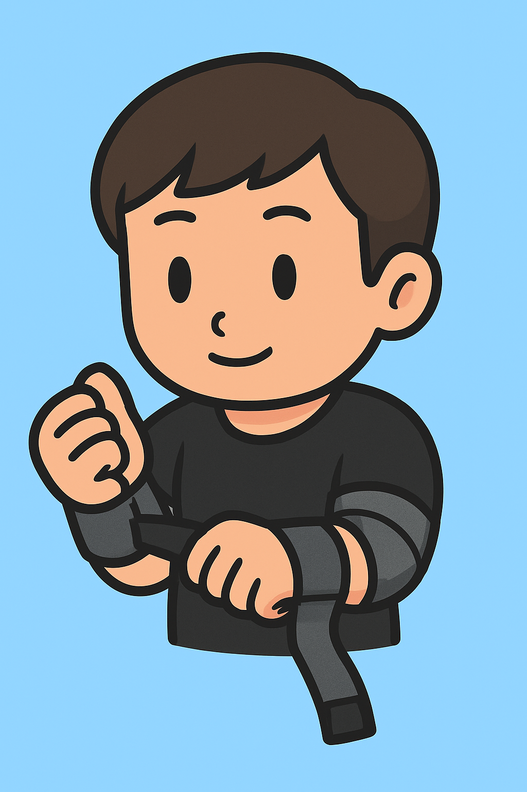
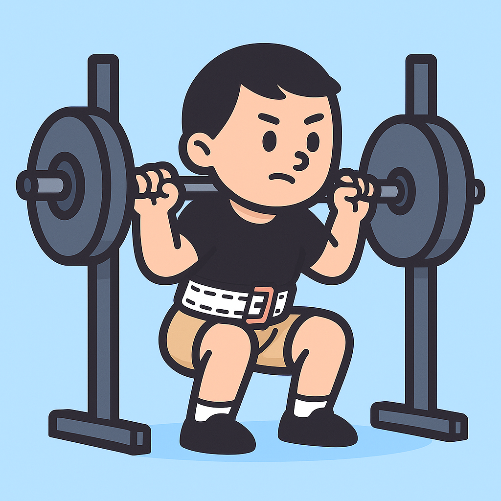
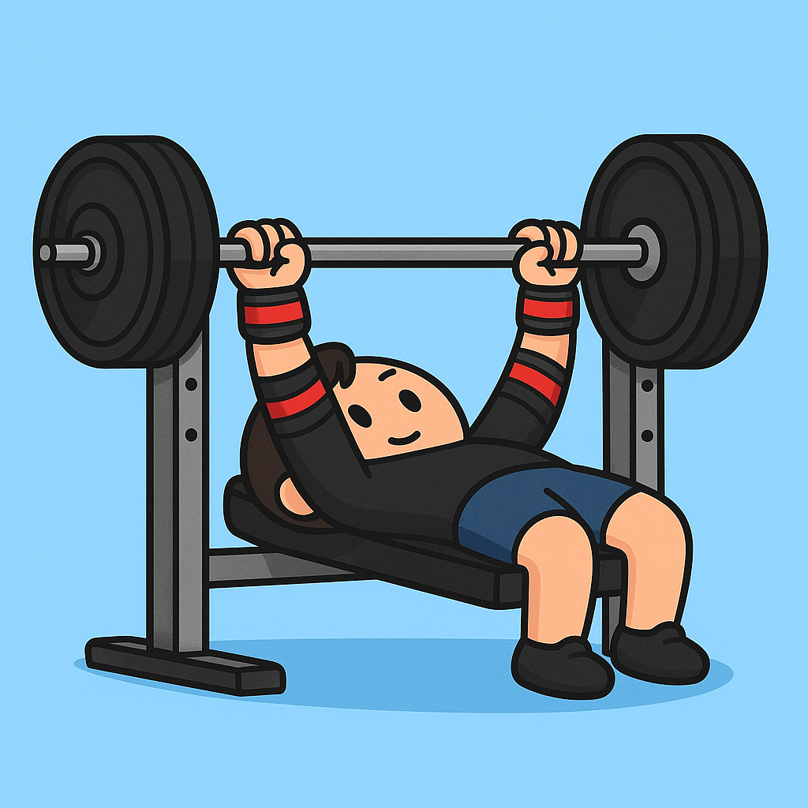

장비 착용법 & 사용 예시
1. 장비 착용 방법

스트랩 착용
스트랩의 방향을 확인하고 손바닥으로 맞잡으며 손목의 벨크로로 고정합니다.

팔꿈치 보호대 착용
팔꿈치 기준 약간 아래에서부터 감아 올라갑니다. 한 바퀴씩 감을 때마다 폭의 절반을 겹쳐 가며 감아줍니다.

허리 벨트 착용
골반위 배꼽 부근으로 두르고 손바닥 하나 들어갈 정도의 공간을 두고 조여 줍니다. 배로 숨을 들이마셨을 때 벨트로 꽉 조여지며 단단한 복압을 유지할 수 있도록 합니다.
2. 장비 사용 & 운동 예시

벨트 + 스쿼트
허리의 과신전을 주의하며 척추 중립을 유지하고, 봉에 깔린다는 느낌으로 앉았다가 일어납니다. 세트 진행 중 복압이 풀리지 않도록 주의합니다.

스트랩 + 데드리프트
스트랩과 손으로 봉의 양쪽을 감싸고 벌어진 스트랩을 손바닥으로 감아 잡아 스트랩이 손목 안쪽으로 감겨 들어가도록 합니다.

팔꿈치 보호대 + 벤치프레스
가슴을 펴 어깨를 벤치에 고정시키고 등을 아주 살짝만 띄워 아치 형태를 만든 후 진행합니다.